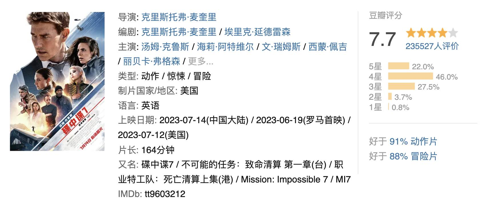
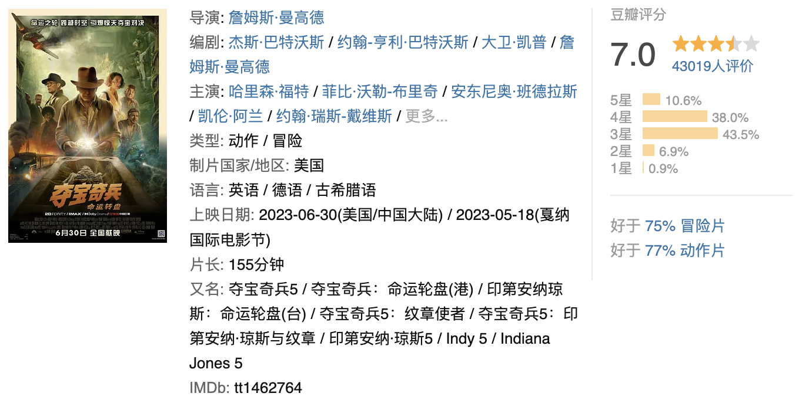
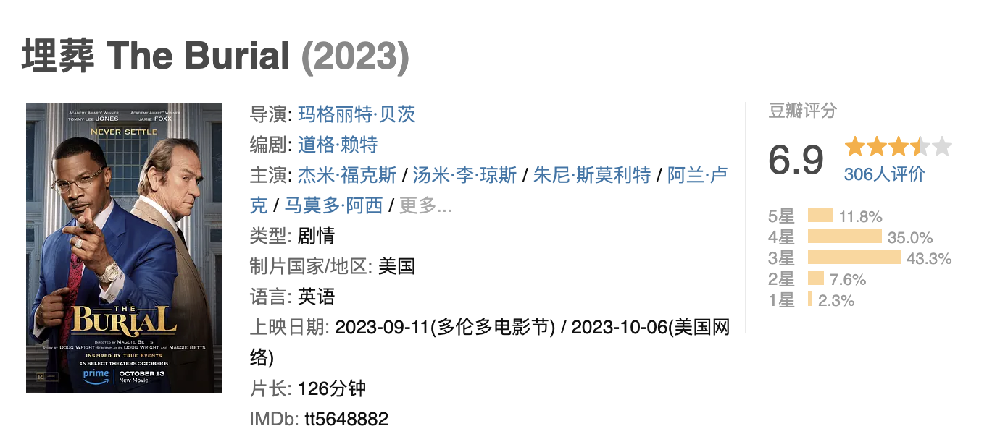
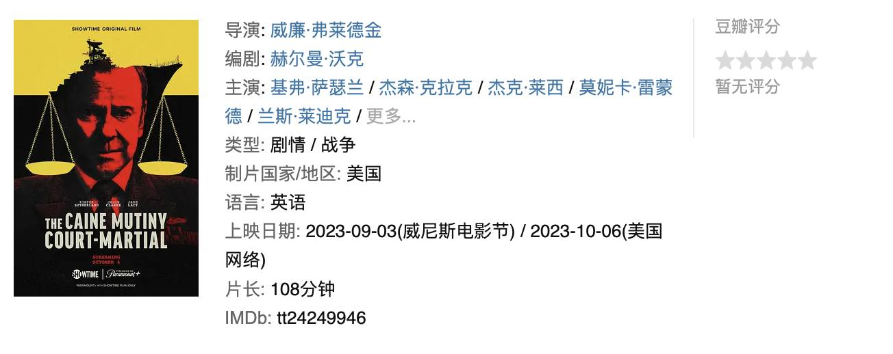
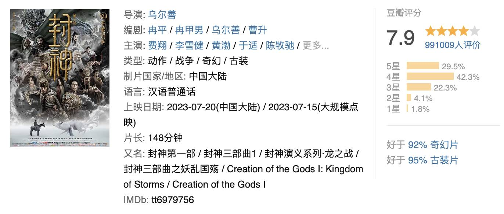
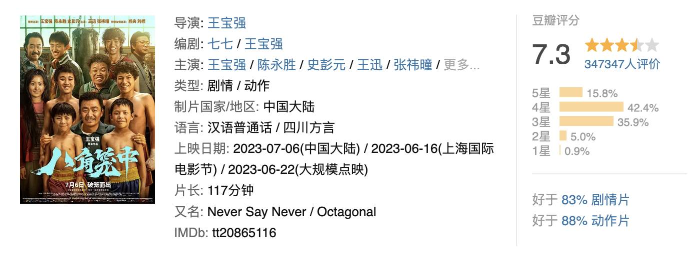

碟中谍7: 致命清算（上）

- 简介：大洋深处，一艘俄罗斯潜水艇正在执行常规任务，但是突发意外导致潜艇爆炸，
全体机组人员无一幸免。而这个谜一样的事故，还隐藏着一个足以颠覆世界的大秘密。此后不久，特工伊森·亨特
（汤姆·克鲁斯 Tom Cruise 饰）接到任务，要去寻找两把造型独特的钥匙。钥匙组合在一起后能够 控制不断进化并拥
有独立思考能力的人工智能，从而可帮助政治家实现称霸世界的野心。不愿被政治家利用的伊森找到好搭档卢瑟·斯蒂克尔
（文·瑞姆斯 Ving Rhames 饰）、班吉·邓（西蒙·佩吉 Simon Pegg 饰）恩和伊尔莎·浮士德（丽贝卡·弗格森
Rebecca Ferguson 饰），开始试图找到并摧毁钥匙，这也意味着他们将与全世界为敌。过程中，性感女贼格蕾丝...
返回目录页
夺宝奇兵5: 命运转盘

-
故事设定于上世纪60年代，琼斯博士（哈里森·福特 Harrison Ford 饰）即将迎来退休，但来访的故人之女海伦娜
（菲比·沃勒-布里奇 Phoebe Waller-Bridge 饰）却打破了他平静的生活，后者希望和他一同寻找能够改变历史
走向的宝物“命运转盘”，这也唤起了一段尘封已久的回忆。在二战末期，琼斯曾与纳粹争夺过“命运转盘”。宛如宿命一般，
如今他再次被卷入“命运转盘”的争夺，而纳粹的残余势力也卷土重来，觊觎着这件宝物。
返回目录页
埋葬 The Burial

-
亚历山大·佩恩商谈执导Amazon Studios打造的[埋葬](The Burial，暂译)，普利策奖获得者道格·赖特操刀影片剧本。影片故事围绕一位来自密西西比的人身伤害律师威利·加里展开。目前影片演员阵容等消息暂无透露。
返回目录页
凯恩舰哗变的军事审判 The Caine Mutiny Court-Martial

-
影片根据获普利策获奖的同名小说改编而成，讲述了一位陆军上尉的军事法庭审理事件，严格说来这已经是一次真正意义上的叛变，依照军规“在特殊情况下，可以不经上级批准解除舰长的指挥权”，在凯恩号军舰因奇格舰长的错误指挥而面临沉船危险的时候，他原本忠心耿耿的副手马克当机立断接管了军舰，马克也因此和支持他的同僚受到了严格的军事审判，他的律师如果想拯救他，唯一的办法就是证明奇格军官精神失常，无法很好地控制船舰。
返回目录页
封神第一部：朝歌风云 (2023)

-
天寒地冻，杀气逼人。大商二王子殷寿（费翔 饰）带领亲手调教的质子旅和殷商大军征讨叛乱的冀州侯苏护，却无意间解除了轩辕坟中妖狐的封印。妖狐附身苏护之女妲己（娜然 饰）的身上，被殷寿带回朝歌献给父王和王兄。夜宴之上，大王子智乱神迷，拔剑弑父。在此之后，殷寿继承王位，而天降灾异又迫使他做出自焚祭天的决定。与此同时，昆仑仙人姜子牙（黄渤 饰）携封神榜下山，寻找天下共主，以期救拔苍生。在朝歌期间，他觉察到殷寿的残暴，遂匆匆逃离。另一方面，曾视殷寿为明主的王子殷郊（陈牧驰 饰）以及西伯侯质子姬发（于适 饰）也发现了商王的私欲和妲己的诡异之处。阴云密布的朝歌，即将掀起一场血雨腥风……
返回目录页
八角笼中 (2023)

-
貌不惊人的沙厂老板向腾辉（王宝强 饰）曾经是一名技术精湛、潜力无限的格斗选手，但因听信教练的话吃了违禁药品遭到禁赛，之后更因伤人锒铛入狱。从此他远离擂台，离年少时的梦想越来越远。偶然机缘，向腾辉在江湖骗子的帮助下重新接触格斗，成立了一个少儿格斗俱乐部。他跑到偏远山区找来了野蛮生长打架抢劫的未成年儿童，教他们打拳挣钱，更为赚钱不择手段打假拳。而在这狼奔豕突的岁月里，向腾辉从孩子们的身上看到了自己当初的影子，他更不愿意少年们重新过回偷鸡摸狗的绝望日子。为此，他义无反顾带着少年走上了与命运抗争的八角擂台……本片以四川凉山“格斗孤儿”的真实事件为蓝本改编。
返回目录页